Datarea.io is an open data platform
built to

Manage increasing open data
Bridge open data networks

Solve the data user's problems
Thousand of data portals and millions of datasets are open on the Internet. The right data may sit at a corner of the Internet, however, finding the right data is sometimes like finding a needle in a haystack.
We would like to save your time poking around the Internet. By collecting and analyzing million of open data, we are able to build a single open data network that includes all open data we can find on the Internet. With one single search at Datarea.io, you are able to reach every concern of the data network and find what you want.
See how we create the data networkThe increasing number of open data portals is a good news and a bad news. The good news is more userful open data is available, but the bad news is you probably need to learn how to use a new portal again.
In Datarea.io, we use a consistent interface to access our data network and an inclusive open data specification to manage the network. We would like to provide you the same accessiblity and usibility for all data, regardless of their origin.
See how we define our specificationsHave you considered what a data portal would be if it is built by and for the data user? What data problem is troubling you? How could we help you to handle the problem?
Tell us your opinions and wishes because Datarea.io is built by and for you.
Contact us